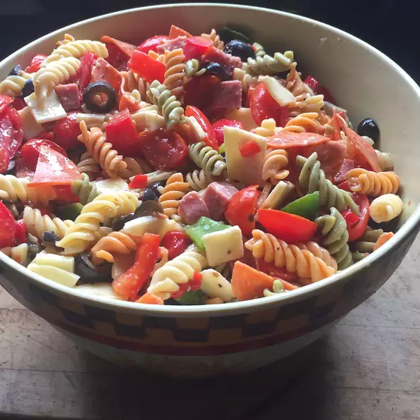

Pasta Salad

Description
An easy to prepare dish perfect for picnics or for any occassion.
Ingredients
- 16 oz. spiral pasta
- 3 c. cherry tomatoes, halved
- 1/2 lb. provolone cheese, cubed
- 1/2 lb. salami cubed
- 1/4 lb. sliced peperoni, cut in half
- 1 large green bell pepper, cut into 1 inch pieces
- 10 oz. black olives, drained
- 4 oz. pimentos, drained
- 8 oz. italian salad dressing
Steps
- Bring a loarge pot of lightly salted water to boil. Add pasta, and
cook for 8 to 10 minutes or until al dente. Drain and rinse.
- In a large bowl, combine pasta with tomatoes, cheese, salami, peperoni,
green peppers, olives, and pimentos. Pour in salad dressing, and toss to coat.
Back To Home Page